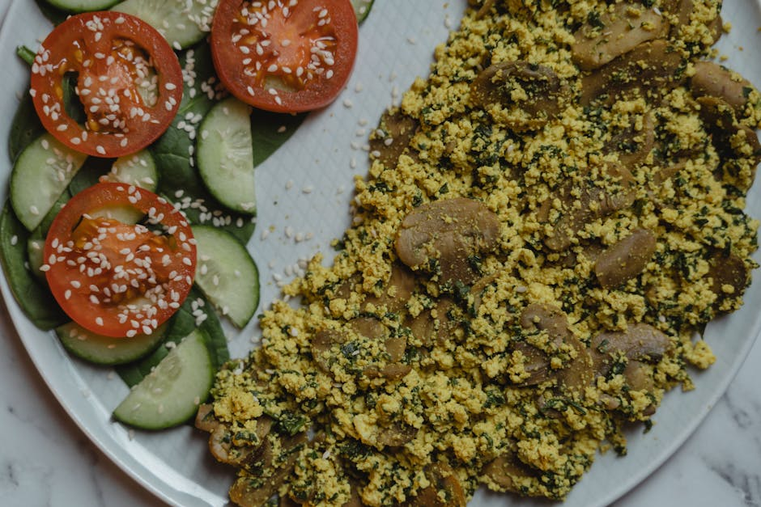

High-Protein Tofu Scramble with Edamame & Hemp

High-Protein Tofu Scramble with Edamame & Hemp delivers 70 g of protein for just 9 g net carbs — a quick breakfast that comes together fast. Exactly the kind of meal that makes a high-protein, low-carb week easy to stick to.
Ingredients
- 320 g Extra-firm tofu
- 100 g Shelled edamame
- 30 g Hemp seeds
- 20 g Nutritional yeast
- 60 g Baby spinach
- 1 tbsp Olive oil
- Turmeric, garlic powder, salt, to taste
Equipment
- non-stick skillet
Method
- Crumble the tofu and pat dry. Fry in olive oil over medium-high heat until golden, 5 min.
- Stir in turmeric, garlic powder and salt for a 'scrambled egg' colour and flavour.
- Add edamame and spinach; cook until wilted.
- Off the heat, fold in nutritional yeast and hemp seeds. Serve hot.
Storage & make-ahead
Fridge: keeps 3–4 days in an airtight container — reheat gently. Most portions freeze well for up to 2 months; thaw overnight.
Tip
A genuinely 70 g plant-based breakfast — tofu, edamame, hemp and nutritional yeast stack the protein. Fully vegan.
Dietary swaps
Soy-free: Extra-firm tofu → paneer, or extra chicken / egg; Shelled edamame → green peas or lima beans (note: a couple of these shift the protein source slightly)
Full nutrition (estimated, per serving): 560 kcal · 70 g protein · 9 g net carbs · 30 g fat (4.5 g sat) · 9 g fiber · 4.5 g sugar · 520 mg sodium. Allergens: Soy. Macros are realistic estimates from standard food-composition values; brands and portions vary.
Get the full cookbook (PDF) — 100 recipes, 3 meal plans & the science →